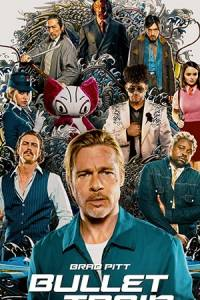
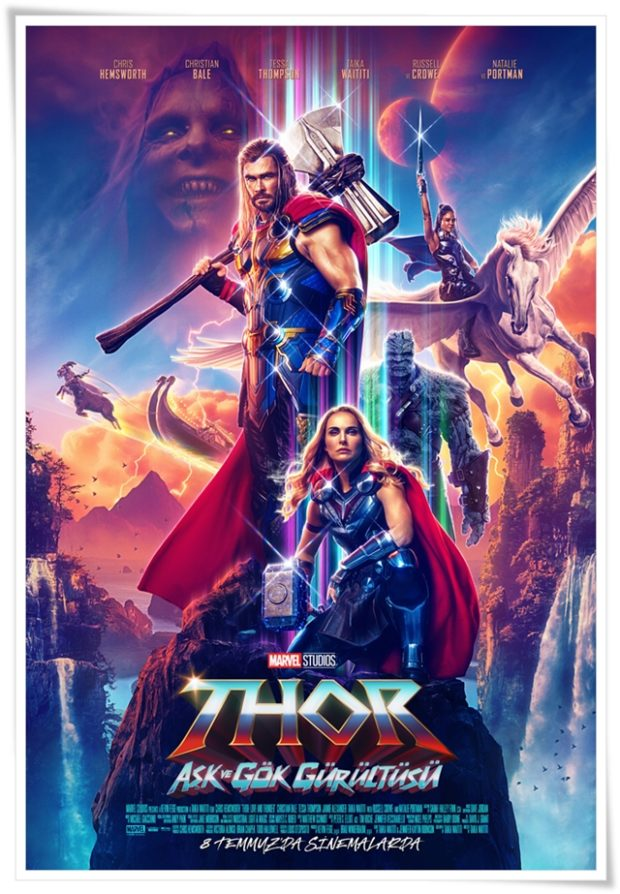
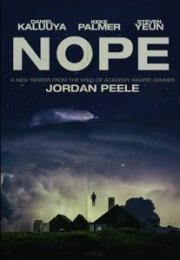

Based on Stephen King's 1996 novel of the same name. Stars Tom Hanks as a death row corrections officer during the U.S. Great Depression who witnesses supernatural events that occur after an enigmatic inmate (Michael Clarke Duncan) is brought to his facility.—MR_Heraclius
| 1 |  | Suikast Treni | 4 |  | Thor ve Aşk Gürültüsü |
| 2 |
|
Top Gun Maverick | 5 |  | Hayır |
| 3 |
|
DC: Süper Evciller Takımı | 6 |
|
Minyonlar 2: Gru'nun Yükselişi |